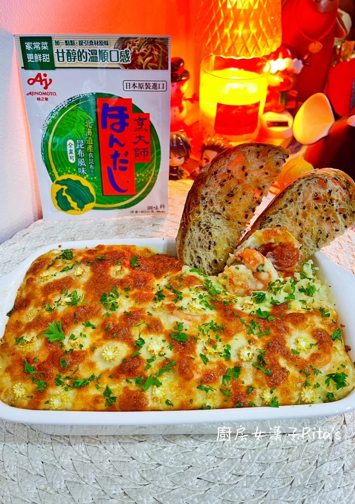
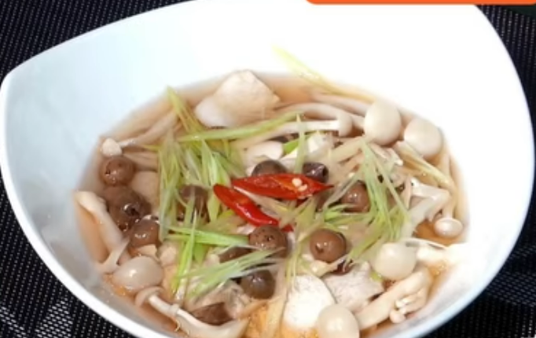
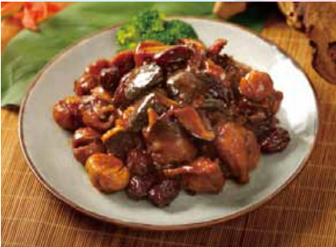
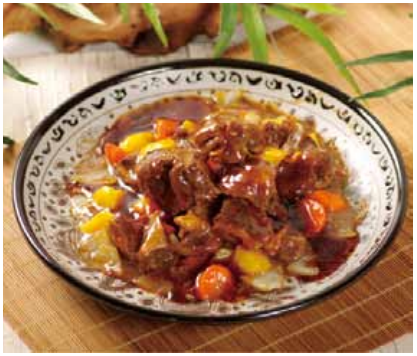
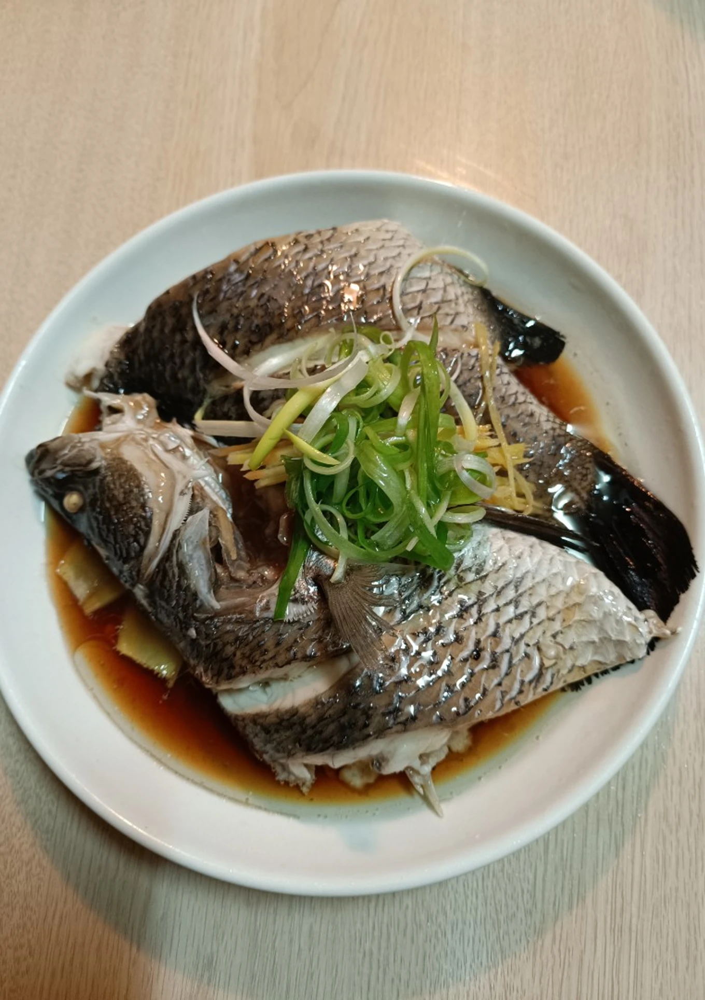
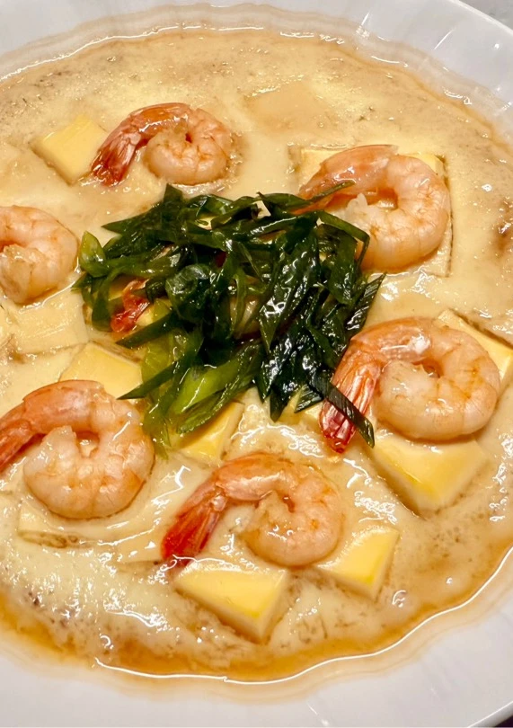
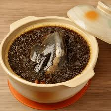

菜餚食譜
起司蝦球焗馬鈴薯泥
材料：馬鈴薯 500 克、牛奶 180 克、優質橄欖油 10 克、鮮蝦 250 克、蒜頭 3 瓣、馬薩瑞拉起司 80 克、玉米筍 3 根、巴西里葉或蔥花 少許
做法：
1: 備料 將鮮蝦去頭、去殼、剖背去泥腸，洗淨後擦乾。馬鈴薯去皮洗淨，切小丁。蒜頭拍扁切末，玉米筍切成圓形厚片。巴西里葉洗淨瀝乾，切碎備用。
2:蒸馬鈴薯 將馬鈴薯丁放入蒸鍋中，蒸約 30 分鐘至熟透。
3:醃製蝦仁 將處理好的蝦仁與醃料（昆布風味、黑胡椒粉、米酒、太白粉）混合均勻，醃製片刻。
4:煎蝦仁熱鍋後加入橄欖油，放入蒜末爆香，加入醃好的蝦仁，煎至兩面上色後關火備用。
5:製作馬鈴薯泥將蒸熟的馬鈴薯丁趁熱放入大碗中，加入橄欖油、鹽、「烹大師」昆布風味和一半的牛奶，壓成泥狀。再加入剩餘的牛奶，繼續壓拌至細緻滑順的馬鈴薯泥。
6:組合與烘烤烤箱預熱至 200°C。將馬鈴薯泥鋪入烤模中，擺上煎好的蝦仁，撒上馬薩瑞拉起司，放上玉米筍片。放入烤箱烤約 10 分鐘，然後轉上火再烤 5 分鐘，直到起司融化並呈金黃色。
玉竹樹子清蒸杏鮑菇
材料：杏鮑菇 400 公克、玉竹 8 公克、樹子 15 公克、嫩薑 9 公克、蔥 8 公克、紅蘿蔔 9 公克、醬油 15 公克、米酒 20 公克、糖 6公克、香油少許
做法：
1:準備輔料 將玉竹泡軟、嫩薑、蔥、紅蘿蔔切絲備用。
2:洗淨調味 將杏鮑菇洗淨後，以米酒醃十分鐘後，將樹子、糖及 1. 之材料鋪上，淋上米酒、醬油。
3:放入蒸鍋 放入鍋蒸約 15 分鐘，起鍋後淋上香油即可。
紅棗栗子雞
材料：雞腿 250 公克、紅棗 20 公克、栗子80 公克、香菇 5 公克、蠔油 20 公克、醬油 30 公克
做法：
1:準備輔料 將栗子、香菇用水泡軟，將香菇切成四塊。
2:起鍋爆炒 起油鍋，先下香菇爆香後，再放雞腿和一起煸炒至香氣出來。
3:大火收汁 再放入紅棗、栗子、蠔油、醬油和水，煮滾後以中火燜煮至收汁即可起鍋。
補腦紅燒牛腩
材料：牛肉 180 公克、蘋果 40 公克、紅蘿蔔 100 公克、洋蔥 100 公克、陳皮 3公克、遠志 8 公克、石菖蒲 5 公克、甘草 3 公克、桂皮 5 公克、大茴香 3公克、生薑 30 公克、醬油 150cc、米酒 60cc、、油 20cc
做法：
1主料準備: 牛肉切塊汆燙去血水後洗淨備用。
2:輔料準備 蘋果、紅蘿蔔、洋蔥去皮切成塊狀備用，生薑切片。
3:香料包製作 遠志、陳皮、石菖蒲、甘草、桂皮、大茴香以小包包住。
4:慢燉收汁起油鍋，放入生薑片、洋蔥爆香後再下牛肉爆炒，再下紅蘿蔔、蘋果、醬油、米酒、3 之藥材包，加水至蓋過所有食材後約 5 公分，以慢火燉煮至牛肉熟爛收汁即可。
清蒸鱸魚
材料：鱸魚 1 尾、洋蔥絲 1/4 顆、薑絲 適量、蔥絲 1 根、清水 1 碗、蒸魚醬油 4 大匙、砂糖 1 小匙、裝飾用薑絲 適量、青蔥絲 2 根、辣椒絲 1 根、香油 2 大匙
做法：
1: 處理鱸魚 將鱸魚洗淨，表面各劃三刀，放入清水中，加入 1 大匙的鹽，浸泡 10 分鐘，使肉質更加緊實。
2:蒸魚 鍋中放水，大火煮開後，將魚放入，蓋上鍋蓋蒸 10 至 12 分鐘。用筷子測試魚肉熟度，熄火後再燜 5 分鐘，取出魚，倒掉蒸魚時產生的水分。
3:製作醬汁 蒸魚的同時，起油鍋，爆香洋蔥絲、薑絲和蔥絲，炒香後加入清水、蒸魚醬油和砂糖，煮滾 5 分鐘，熄火，將醬汁濾出備用。
4:裝盤與調味 將切好的蔥絲、薑絲和辣椒絲擺在蒸好的魚上，淋上醬汁。另起小鍋加熱香油，淋在魚上，趁熱享用。
蝦仁豆腐蒸蛋
材料：鳳尾蝦仁 7 隻、雞蛋豆腐 1/2 盒、雞蛋 1 顆、清水 100cc、鹽 少許、醬油 少許、烏醋 少許、味醂 少許、蔥絲 少許
做法：
1:備料 將雞蛋豆腐取出 1/2 盒，切成小丁備用。
2:調製蛋液 將雞蛋打散，加入 100cc 清水與少許鹽，攪拌均勻。
3:蒸製豆腐與蛋液 在鍋中放入蒸架，加入適量清水。
將切好的豆腐丁放入耐熱容器中，倒入過篩後的蛋液。
蓋上鍋蓋，大火蒸約 3 分鐘。
4:加入蝦仁 打開鍋蓋，將蝦仁均勻放在蛋液表面，蓋上鍋蓋繼續蒸約 2 分鐘，至蝦仁熟透。
5:調製醬汁與裝飾 將醬油、烏醋與味醂各少許混合成醬汁。
蒸蛋完成後，淋上醬汁，最後撒上蔥絲裝飾，即可享用。
清暑益氣仙草雞湯
材料：雞肉 300 公克、仙草乾 200 公克、紅棗 20 公克、東洋參 10 公克、麥門冬 10 公克、蛤蜊 半斤、米酒 50cc
做法：
1:仙草處理 仙草乾洗淨加水熬煮後去渣留汁備用。
2:準備主料 雞腿切塊，汆燙去除血水備用。
3:燉煮 在鍋中加入水、仙草燉包、薑片，煮滾後轉小火燉煮30分鐘後再加入雞肉和紅棗，燉煮30分鐘，最後加入枸杞和蛤蜊，煮至蛤蜊開口即可。